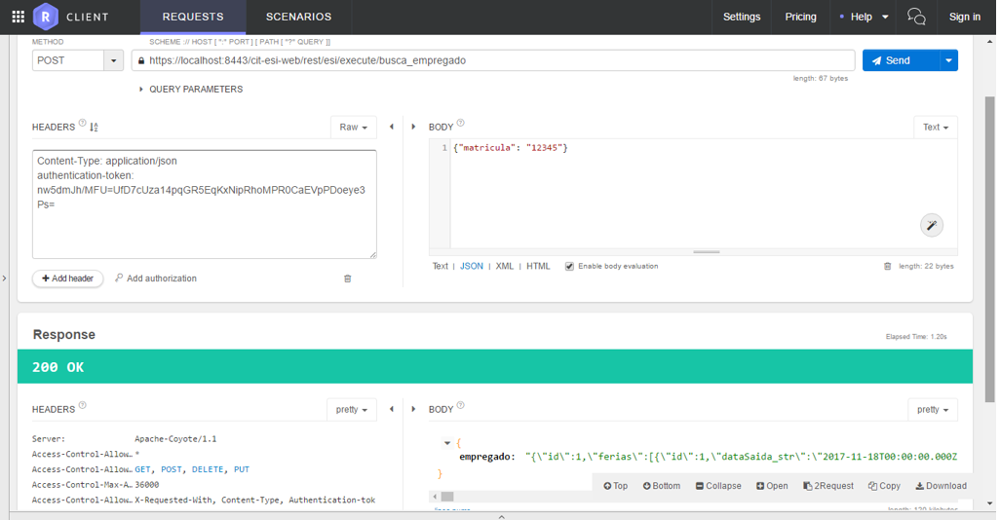
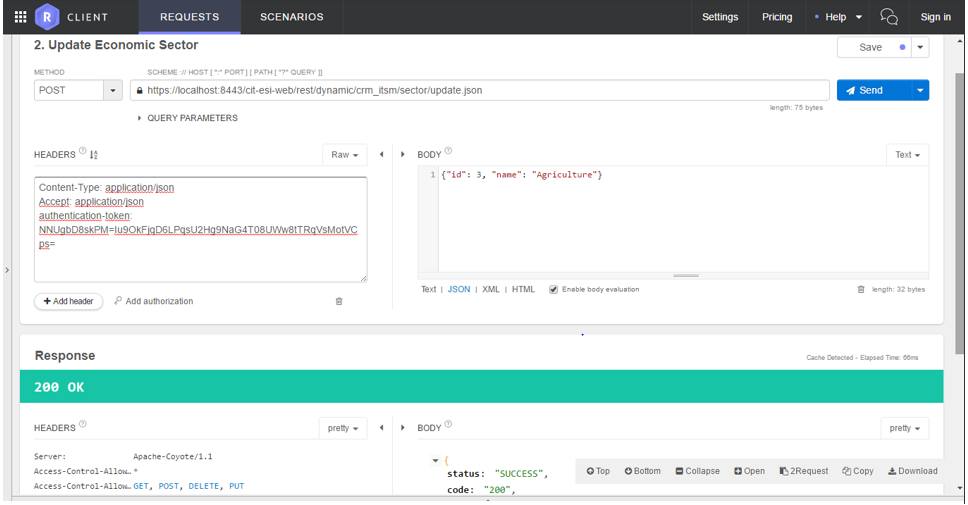
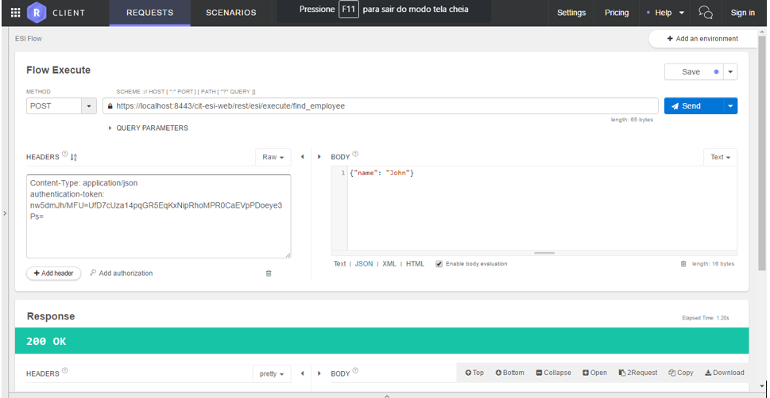

Webservices - 4biz Builder¶
Este documento reúne os conhecimentos mínimos necessários para o adequado uso dos serviços via Rest.
| URL | Descrição | Parâmetros | Retorna |
|---|---|---|---|
| /execute/{name} | Inicia um fluxo ESI a partir do nome | name: Nome do fluxo cadastrado | Objeto representativo do fluxo cadastrado |
| /instance/initialize/{processInstanceId} | Recupera os valores de uma instância de processo | processInstanceid: ID da instância de processo | Objeto representativo da instância de processo cadastrada |
| /instance/suspend/{processInstanceId} | Suspende uma instância de processo | processInstanceid: ID da instância de processo | Objeto representativo da instância de processo cadastrada |
| /instance/restart/{processInstanceId} | Reinicia uma instância de processo | processInstanceid: ID da instância de processo | Objeto representativo da instância de processo cadastrada |
| /instance/reopen/{processInstanceId} | Reabre uma instância de processo | processInstanceid: ID da instância de processo | Objeto representativo da instância de processo cadastrada |
| /userTask/{userTaskId} | Recupera uma tarefa de usuário | userTaskId: ID da tarefa de usuário criada | Objeto representativo da instância de processo cadastrada |
| /rule/executeWithMap/{name} | Executa uma regra de negócio | name: Nome da regra de negócio cadastrada | Objeto representativo da regra de negócio executada |
- request body: JSON Objeto com variáveis para o fluxo
- request body: JSON Objeto com variáveis para regras de negócio
Tabela 1 - Especificação das APPLICATION PROGRAMMABLE INTERFACES (APIs)
ORIENTAÇÕES ESPECÍFICAS PARA ACESSO À API REST¶
Nas seções seguintes, está detalhado cada tipo de uso previsto para os serviços disponíveis via Rest no produto 4biz Enteprise Builder.
Autenticação¶
Para usar as APIs, o cliente deve estar logado no Builder. Para isso, basta obter um token a partir do serviço de autenticação e injetar esse token no header de cada requisição REST com o identificador authentication-token. A autenticação é feita através do serviço POST /cit-esi-web/token, passando um objeto JSON com os atributos username e password no body.

Figura 1 - Exemplo utilizando o plugin Restlet Client do Chrome
API REST de objetos de negócio¶
Cada objeto de negócio disponibiliza um conjunto de serviços REST que pode ser consumido a partir da URL /cit-esi-web/dynamic/{nome da aplicação}/{nome do objeto de negócio}. São serviços básicos de criação, atualização, listagem e exclusão do objeto de negócio, além de um método getStructure que retorna o metadado do objeto de negócio. Cada SQL criado no objeto de negócio também pode ser chamado na forma de método. Seguem exemplos utilizando o objeto de negócio hotel da aplicação hotéis. Para cada requisição, deve ser fornecido o authentication-token obtido no serviço de login. A url deve terminar com “.json”.
Inclusão de objeto de negócio¶
- HTTP verb: POST
- URL: /cit-esi-web/rest/dynamic/{application name}/{business object name}.json
- Body: JSON contendo os atributos do registro do objeto de negócio a ser incluído
Figura 2 - Inclusão de objeto de negócio
Alteração de objeto de negócio¶
- HTTP verb: POST
- URL: /cit-esi-web/rest/dynamic/{application name}/{business object name} /update.json
- Body: JSON contendo os atributosdo registro do objeto de negócio a ser alterado

Figure 3 - Mudança de objeto de negócio
Exclusão de objeto de negócio¶
- HTTP verb: POST
- URL: /cit-esi-web/rest/dynamic/{application name}/{business object name}/remove.json
- Body: JSON contendo a chave primária do registro do objeto de negócio a ser excluído

Figura 4 - Exclusão de objeto de negócio
Listagem de objetos de negócio¶
- HTTP verb: GET
- URL: /cit-esi-web/rest/dynamic/{application name}/{business object name}.json

Figura 5 - Listagem de objetos de negócio
Recuperação de objeto de negócio pela chave primária¶
- HTTP verb: POST
- URL: /cit-esi-web/rest/dynamic/{application name}/{business object name}/restore.json
- Body: JSON contendo:
- A chave primária do registro do objeto de negócio a ser excluído
- Atributo boolean findManyToOne, indicando se o sistema deve recuperar os relacionamentos muitos para um do objeto
- Atributo boolean findOneToMany, indicando se o sistema deve recuperar os relacionamentos um para muitos do objeto

Figura 6 - Recuperação de objeto de negócio pela chave primária
Recuperação da estrutura do objeto de negócio¶
- HTTP verb: GET
- URL: /cit-esi-web/rest/dynamic/{application name}/{business object name}/getStructure.json
Figura 7 - Recuperação da estrutura do objeto de negócio
SQL Execução de objeto de negócio¶
- HTTP verb: POST
- URL: / cit-esi-web / rest / dynamic / {application name} / {business object name} /list.son
- Body: JSON contendo:
- Atributo SQLName com o nome do SQL a ser executado
- Atributo JSON dynamicModel contendo os valores dos parâmetros esperados no SQL
- Atributo boolean findManyToOne (opcional), indicando se o sistema deve recuperar os relacionamentos muitos para um do objeto
- Atributo boolean findOneToMany (opcional), indicando se o sistema deve recuperar os relacionamentos um para muitos do objeto
Figura 8 - Execução de SQL do objeto de negócio
Execução de fluxos ESI¶
Qualquer fluxo ESI pode ser executado via REST utilizando o serviço POST /cit-esi-web/rest/esi/execute/{nome do fluxo}. Para cada requisição, deve ser fornecido o authentication-token obtido no serviço de login. No corpo (body) da requisição deve ser fornecido um JSON contendo as variáveis de entrada necessárias à execução do fluxo. O exemplo abaixo executa o fluxo busca_empregado, fornecendo a matricula “12345” como variável de entrada do fluxo. O fluxo retorna o objeto JSON “empregado”.

Figura 9 - Exemplo de execução de fluxos ESI
Produto/Versão: 4biz | Helium